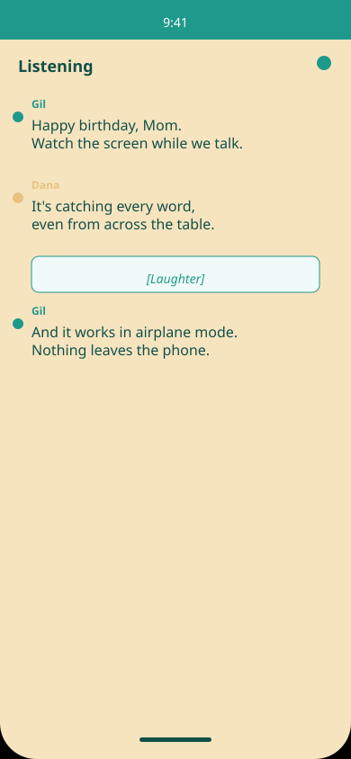

Live Captions
See every word as it's spoken. The caption stream scrolls in real time as people talk.
Live captions, speaker labels, entirely on your phone.
See every word as it's spoken. The caption stream scrolls in real time as people talk.
Know who's talking without asking. Each person gets their own label: Speaker 1, Speaker 2.
Hear ambient sounds too. Laughter, applause, doorbell, knock, phone ringing — all captioned.
Quiet or distant speech is faded, never hidden. You see everything the phone hears.
Made for deaf and hard-of-hearing people. Built to work anywhere you'd use a phone: restaurants, the dinner table, any conversation.
Seal works best when your phone is near the center of the table, with a few people talking. All you need is your iPhone and a moment to start listening.
Captioning never leaves your device. No servers, no accounts, nothing in the cloud.
No purchase price, no subscription, no ads, no hidden costs. Free for anyone who needs it. That's not changing.
Conversations save automatically on your phone and delete after 30 days. Never backed up, never synced.
One obvious button. No settings to choose, no modes to understand.
The moment you tap, captions start appearing. You'll see: "Listening" while it's working.
Captions scroll as people talk. Each speaker's words are labeled so you know who said what.
When you stop listening, the conversation saves automatically on your phone. Reread it anytime in the next 30 days.

Screenshots from the real app, running on-device with no network.
Join the beta or download from the App Store.
TestFlight testing is available now. Public App Store launch is coming later in October.
No. Seal works entirely on your phone, even in airplane mode. Everything happens locally — the transcription, speaker labeling, sound recognition. Once the speech models are installed, captioning needs nothing from the network.
English is fully supported. Support for other languages depends on Apple's on-device speech-to-text capabilities on iOS.
Seal works best with your phone near the center of the conversation — on or near the table. It's designed for intimate conversation environments: restaurants, dinner tables, offices. Far-field audio (across the room) is beyond the primary design.
No. Transcripts stay on your phone only and are never backed up to iCloud or any sync service. This is intentional — it keeps your conversations truly private. They delete automatically after 30 days, and you can delete them anytime.
Yes. You can change the text size, text color, background color, and font. Seal respects the system's Dynamic Type setting, so it adjusts to your preferred text size globally.
Continuous captioning does use battery. For typical use, expect several hours of captioning on a full charge. The duration depends on your device and how much audio is present.